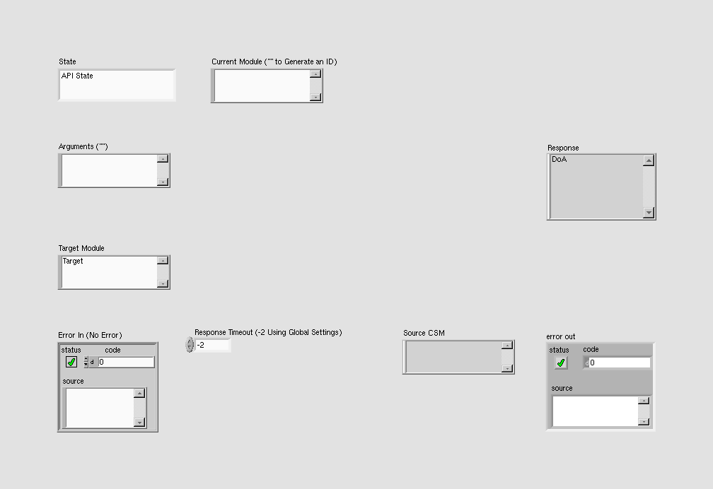
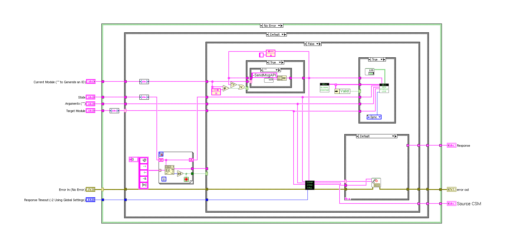

LabVIEW VI Comparison Report
06:59:21 10/29/2026
First VI: /workspace-base/src/user.lib/_NEVSTOP/Communicable State Machine(CSM)/AdvanceAPI/CSM - Send Message and Wait for Reply.viSecond VI: /workspace/src/user.lib/_NEVSTOP/Communicable State Machine(CSM)/AdvanceAPI/CSM - Send Message and Wait for Reply.vi
| Front Panel Overview | ||

|
 | |
| Block Diagram Overview | ||
|
 |

|
- Front Panel
- Front Panel Position/Size
- Block Diagram Functional
- Block Diagram Cosmetic
- VI Attribute
Detailed Information
1. VI Attribute - Documentation (VI Properties)
- description text : changed from "Sends a synchronous message to the CSM and waits for a reply before continuing code execution. - If no reply message is received within the timeout, this VI returns a "CSM Timeout Error". - If the target module does not exist, this VI returns a "Target Error". > [!NOTE] Synchronous Message > > A synchronous message is a type of message. After a CSM sends a synchronous message, it pauses state transitions and waits for the callee to complete message processing. Synchronous messages are described via `-@`. A call from one JKISM module to another via a synchronous message is called a synchronous call. > > Errors occurring at the Caller: > - If the input target module is `""`, a `NO Target Error` is generated. > - If the input module does not exist, a `Target Error` is generated. > - If the input module exists but does not complete processing within the specified time, a `Timeout Error` is generated. > > Caller waits for return: > - If the caller is a CSM module, it stays in the Parse State the Queue++ VI. > - If it is an API call, it stays in the calling VI, such as the CSM - Send Message and Wait for Reply VI. > > Return: > - If the caller is a CSM module: > - Normally, it enters the `Response` state to handle the return. > - If an error occurs at the caller, it causes the CSM state machine to enter the `Error Handler` module to handle the error. > - If an error occurs at the callee, this information is still the result of the message. It is handled in the `Response` state and can be obtained from Additional Information. > - If it is an API call: > - The Response output is the return. > - Errors occurring at both the caller and callee are merged into the error cluster output. > [!NOTE] CSM Message Target Module Description > > In Normal Mode, the target module for a CSM message is the specified module name. > System-level modules start with a `.` in their name. The target module for a CSM message includes the `.` in the name. For example, if the requested module name is `.System`, the target module for the CSM message is `.System`. > In Worker Mode, the target module for a CSM message can only be the overall module name, not the node name. For example, if the requested module name is `Worker#`, the target module for the CSM message is `Worker`. > In Chain of Responsibility Mode, the target module for a CSM message can only be the overall module name, not the node name. For example, if the requested module name is `Chain$1`, the target module for the CSM message is `Chain`. > In Chain of Responsibility Mode, a message is routed directly based on handling capability and priority (smaller number = higher priority) and is not passed sequentially across nodes. -- Controls -- - Current Module ("" to Generate an ID): Name of the current module. If empty, a temporary ID is generated for debugging purposes to identify the location. - State: Message string. - Arguments (""): Message arguments. - Target Module: Target CSM module name. - Response Timeout (-2 Using Global Settings): Timeout setting for waiting for a reply. The default is 5000 ms. -- Indicators -- - Response: Returned response. - Source CSM: Name of the CSM module that sourced the returned response. In Worker Mode or Chain of Responsibility Mode, this output returns the name of the node." to "Sends a synchronous message to the CSM and waits for a reply before continuing code execution. - If no reply message is received within the timeout, this VI returns a "CSM Timeout Error". - If the target module does not exist, this VI returns a "Target Error". > [!NOTE] Synchronous Message > > A synchronous message is a type of message. After a CSM sends a synchronous message, it pauses state transitions and waits for the callee to complete message processing. Synchronous messages are described via `-@`. A call from one JKISM module to another via a synchronous message is called a synchronous call. > > Errors occurring at the Caller: > - If the input target module is `""`, a `NO Target Error` is generated. > - If the input module does not exist, a `Target Error` is generated. > - If the input module exists but does not complete processing within the specified time, a `Timeout Error` is generated. > > Caller waits for return: > - If the caller is a CSM module, it stays in the Parse State the Queue++ VI. > - If it is an API call, it stays in the calling VI, such as the CSM - Send Message and Wait for Reply VI. > > Return: > - If the caller is a CSM module: > - Normally, it enters the `Response` state to handle the return. > - If an error occurs at the caller, it causes the CSM state machine to enter the `Error Handler` module to handle the error. > - If an error occurs at the callee, this information is still the result of the message. It is handled in the `Response` state and can be obtained from Additional Information. > - If it is an API call: > - The Response output is the return. > - Errors occurring at both the caller and callee are merged into the error cluster output. > [!NOTE] CSM Synchronous Message Global Timeout > > - When performing CSM inter-module communication or using the VI that sends synchronous messages, the default timeout is -2, which uses the globally configured timeout. > - The global timeout can be set to other positive values using the CSM - Set TMO of Sync-Reply VI to override the global setting. > - The global timeout only applies to synchronous calls. Asynchronous calls are unaffected. > [!NOTE] CSM Message Target Module Description > > In Normal Mode, the target module for a CSM message is the specified module name. > System-level modules start with a `.` in their name. The target module for a CSM message includes the `.` in the name. For example, if the requested module name is `.System`, the target module for the CSM message is `.System`. > In Worker Mode, the target module for a CSM message can only be the overall module name, not the node name. For example, if the requested module name is `Worker#`, the target module for the CSM message is `Worker`. > In Chain of Responsibility Mode, the target module for a CSM message can only be the overall module name, not the node name. For example, if the requested module name is `Chain$1`, the target module for the CSM message is `Chain`. > In Chain of Responsibility Mode, a message is routed directly based on handling capability and priority (smaller number = higher priority) and is not passed sequentially across nodes. -- Controls -- - Current Module ("" to Generate an ID): Name of the current module. If empty, a temporary ID is generated for debugging purposes to identify the location. - State: Message string. - Arguments (""): Message arguments. - Target Module: Target CSM module name. - Response Timeout (-2 Using Global Settings): Timeout setting for waiting for a reply. The default is 5000 ms. -- Indicators -- - Response: Returned response. - Source CSM: Name of the CSM module that sourced the returned response. In Worker Mode or Chain of Responsibility Mode, this output returns the name of the node."